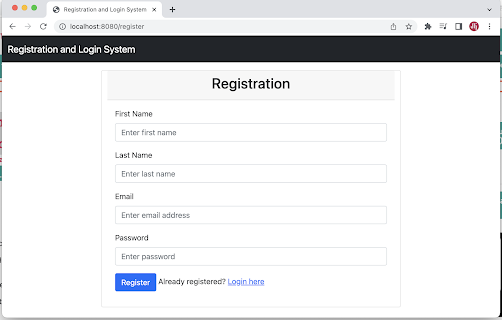
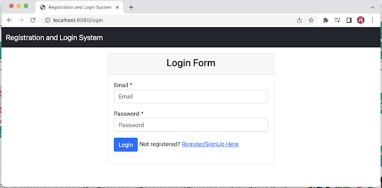
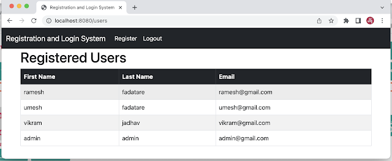
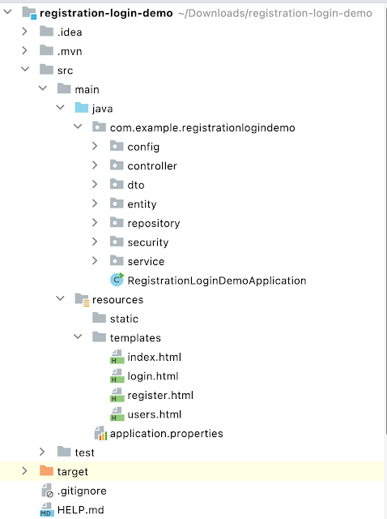
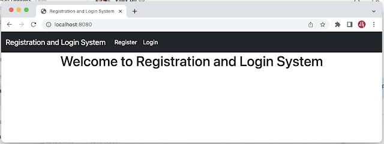

Spring Boot User Registration and Login Example Tutorial
Spring Security is a framework that provides authentication, authorization, and protection against common attacks. With first-class support for securing imperative and reactive applications, it is the de-facto standard for securing Spring-based applications.
Tools and Technologies Used:
In this tutorial, we will use the latest version of all the tools and technologies:
- Spring Boot 3
- Spring MVC 6
- Spring Security 6
- Hibernate 6
- Thymeleaf 3
- MySQL 8
- Maven
We validate the user registration fields with Java bean validation annotations and Hibernate validator implementation.
Basically, we will develop a simple User Registration Module using Role-based Spring Security that can be used in any Spring MVC-based project.
Let's get started with our objective. What will we build?
What will we build?
We will build two main functionalities:
- Register a user (store data in MySQL database).
- Login Authentication - validate user login credentials with database email and password.
- We will secure the Registered Users Page with role-based Spring Security.
User Registration Page:
Login Page:
Registered Users Page:
1. Create a Spring Boot Project
Spring Boot provides a web tool called Spring Initializer to quickly bootstrap an application. To use it, go to https://start.spring.io/ and generate a new Spring Boot project.
Use the below details in the Spring Boot creation:
- Generate: Maven Project
- Java Version: 17
- Spring Boot: 3.0.0
- Group: net.guides.springboot
- Artifact: registration-login-demo
- Name: registration-login-demo
- Dependencies: Web, JPA, MySQL, Thymeleaf, Security, Lombok
Click on the Generate Project button. Next, you can extract and import the downloaded ZIP file into your favorite IDE.
Here is the pom.xml file for your reference:
<?xml version="1.0" encoding="UTF-8"?>
<project xmlns="http://maven.apache.org/POM/4.0.0"
xmlns:xsi="http://www.w3.org/2001/XMLSchema-instance"
xsi:schemaLocation="http://maven.apache.org/POM/4.0.0 https://maven.apache.org/xsd/maven-4.0.0.xsd">
<modelVersion>4.0.0</modelVersion>
<parent>
<groupId>org.springframework.boot</groupId>
<artifactId>spring-boot-starter-parent</artifactId>
<version>3.0.0</version>
<relativePath/>
</parent>
<groupId>com.example</groupId>
<artifactId>registration-login-demo</artifactId>
<version>0.0.1-SNAPSHOT</version>
<name>registration-login-demo</name>
<description>Demo project for Spring Boot</description>
<properties>
<java.version>17</java.version>
</properties>
<dependencies>
<dependency>
<groupId>org.springframework.boot</groupId>
<artifactId>spring-boot-starter-data-jpa</artifactId>
</dependency>
<dependency>
<groupId>org.springframework.boot</groupId>
<artifactId>spring-boot-starter-thymeleaf</artifactId>
</dependency>
<dependency>
<groupId>org.springframework.boot</groupId>
<artifactId>spring-boot-starter-web</artifactId>
</dependency>
<dependency>
<groupId>mysql</groupId>
<artifactId>mysql-connector-java</artifactId>
<scope>runtime</scope>
</dependency>
<dependency>
<groupId>org.projectlombok</groupId>
<artifactId>lombok</artifactId>
<optional>true</optional>
</dependency>
<dependency>
<groupId>org.springframework.boot</groupId>
<artifactId>spring-boot-starter-security</artifactId>
</dependency>
</dependencies>
<build>
<plugins>
<plugin>
<groupId>org.springframework.boot</groupId>
<artifactId>spring-boot-maven-plugin</artifactId>
</plugin>
</plugins>
</build>
</project>
2. Create a Project Structure or Packing Structure
Create packaging structure as per the screenshot below:
3. Configure MySQL database
Let's use the MySQL database to store and retrieve the data in this example, and we gonna use Hibernate properties to create and drop tables.
Open the application.properties file and add the following configuration:
spring.datasource.url=jdbc:mysql://localhost:3306/login_system
spring.datasource.username=root
spring.datasource.password=Mysql@123
spring.jpa.properties.hibernate.dialect=org.hibernate.dialect.MySQLDialect
spring.jpa.hibernate.ddl-auto=update
Ensure you create a login_system database before running the Spring boot application. Also, adjust the username and password accordingly.
4. Create JPA Entities - User and Role
Let's create User and Role JPA entities and establish a many-to-many mapping between them - one user can have multiple roles, and one role can be assigned to multiple users.
The @ManyToMany JPA annotation is used to link the source entity with the
target entity.
A many-to-many association always uses an intermediate join table to store the association that joins two
entities. The join table is defined using the @JoinTable JPA annotation.
User Entity
package com.example.registrationlogindemo.entity;
import jakarta.persistence.*;
import lombok.AllArgsConstructor;
import lombok.Getter;
import lombok.NoArgsConstructor;
import lombok.Setter;
import java.util.ArrayList;
import java.util.List;
@Getter
@Setter
@NoArgsConstructor
@AllArgsConstructor
@Entity
@Table(name="users")
public class User {
@Id
@GeneratedValue(strategy = GenerationType.IDENTITY)
private Long id;
@Column(nullable=false)
private String name;
@Column(nullable=false, unique=true)
private String email;
@Column(nullable=false)
private String password;
@ManyToMany(fetch = FetchType.EAGER, cascade=CascadeType.ALL)
@JoinTable(
name="users_roles",
joinColumns={@JoinColumn(name="USER_ID", referencedColumnName="ID")},
inverseJoinColumns={@JoinColumn(name="ROLE_ID", referencedColumnName="ID")}
)
private List<Role> roles = new ArrayList<>();
}
This above code defines a Java class called User that is mapped to a
database table called users. The class
has several annotations on it:
@Getter and @Setter: These annotations are from the Lombok library and automatically generate getter and setter methods for all of the class's fields.@NoArgsConstructor: This annotation is from Lombok and generates a no-argument constructor for the class.@AllArgsConstructor: This annotation is from Lombok and generates a constructor that takes arguments for all of the class's fields.@Entity: This annotation is from the Java Persistence API (JPA) and specifies that the class is a JPA entity, meaning that it is mapped to a database table.@Table(name="users"): This annotation is from JPA and specifies the name of the database table that the entity is mapped to.@Id: This annotation is from JPA and specifies that the field id is the primary key for the database table.@GeneratedValue(strategy = GenerationType.IDENTITY): This annotation is from JPA and specifies that the primary key values are automatically generated by the database using an identity column.@Column(nullable=false): These annotations are from JPA and specify that the fields name, email, and password cannot be null in the database table.@ManyToMany(fetch = FetchType.EAGER, cascade=CascadeType.ALL): This annotation is from JPA and specifies that the relationship between User and Role entities is many-to-many.@JoinTable: This annotation is from JPA and specifies the details of the join table that is used to implement the many-to-many relationship between User and Role entities. It specifies the name of the join table (users_roles) and the names of the foreign key columns in the join table (USER_ID and ROLE_ID).
Role Entity
package com.example.registrationlogindemo.entity;
import jakarta.persistence.*;
import lombok.AllArgsConstructor;
import lombok.Getter;
import lombok.NoArgsConstructor;
import lombok.Setter;
import java.util.List;
@Getter
@Setter
@NoArgsConstructor
@AllArgsConstructor
@Entity
@Table(name="roles")
public class Role {
@Id
@GeneratedValue(strategy = GenerationType.IDENTITY)
private Long id;
@Column(nullable=false, unique=true)
private String name;
@ManyToMany(mappedBy="roles")
private List<User> users;
}
@Getter and @Setter: These annotations are from the Lombok library and automatically generate getter and setter methods for all of the class's fields.@NoArgsConstructor: This annotation is from Lombok and generates a no-argument constructor for the class.@AllArgsConstructor: This annotation is from Lombok and generates a constructor that takes arguments for all of the class's fields.@Entity: This annotation is from the Java Persistence API (JPA) and specifies that the class is a JPA entity, meaning that it is mapped to a database table.@Table(name="users"): This annotation is from JPA and specifies the name of the database table that the entity is mapped to.@Id: This annotation is from JPA and specifies that the field id is the primary key for the database table.@GeneratedValue(strategy = GenerationType.IDENTITY): This annotation is from JPA and specifies that the primary key values are automatically generated by the database using an identity column.
This above code defines a Java class called Role that is mapped to a
database table called roles. The class
has several annotations on it:
5. Create UserRepository and RoleRepository
Next, let's create Spring Data JPA repositories for User and Role JPA Entities.
UserRepository
package net.javaguides.springboot.repository;
import net.javaguides.springboot.entity.User;
import org.springframework.data.jpa.repository.JpaRepository;
public interface UserRepository extends JpaRepository<User, Long> {
User findByEmail(String email);
}
The above code defines a Spring Data JPA repository interface called UserRepository, which extends the
JpaRepository interface. The JpaRepository
interface provides several methods for performing CRUD (Create,
Read, Update, Delete) operations on a JPA entity. It takes two type parameters: the entity type, User, and
the type of the entity's primary key, Long.
In addition to the methods provided by JpaRepository, the UserRepository interface also declares a custom
method called findByEmail(). This method uses Spring Data JPA's method name
query creation feature to
generate a query that finds a user by their email address. The method takes a single argument, which is the
email address to search for, and it returns a User object if a match is
found or null otherwise.
RoleRepository
package net.javaguides.springboot.repository;
import net.javaguides.springboot.entity.Role;
import org.springframework.data.jpa.repository.JpaRepository;
public interface RoleRepository extends JpaRepository<Role, Long> {
Role findByName(String name);
}
The above code defines a Spring Data JPA repository interface called RoleRepository, which extends the
JpaRepository interface. The JpaRepository
interface provides several methods for performing CRUD (Create,
Read, Update, Delete) operations on a JPA entity. It takes two type parameters: the entity type, Role, and
the type of the entity's primary key, Long.
In addition to the methods provided by JpaRepository, the RoleRepository interface also declares a custom
method called findByName(). This method uses Spring Data JPA's method name
query creation feature to
generate a query that finds a role by its name. The method takes a single argument, which is the role name
to search for, and it returns a Role object if a match is found or null
otherwise.
6. Create a Thymeleaf Template for the Home Page
Let's create an AuthController Spring MVC controller class and add the
following content:
package net.javaguides.springboot.controller;
import org.springframework.stereotype.Controller;
import org.springframework.ui.Model;
import org.springframework.web.bind.annotation.GetMapping;
@Controller
public class AuthController {
// handler method to handle home page request
@GetMapping("/index")
public String home(){
return "index";
}
}
The above code defines a Spring MVC controller class called AuthController,
which handles incoming requests
to the /index URL path. The @Controller
annotation indicates that this class is a Spring
MVC controller and should be scanned by the Spring framework to handle incoming requests.
The @GetMapping("/index") annotation on the home() method maps HTTP GET requests to the /index URL path to
this method. When a user makes a GET request to this URL path, the home()
method is executed. This method
returns the String "index", the name of a view template that will be resolved by the Spring framework's view
resolver.
Thymeleaf Template - Index.html
Next, let's create an index Thymeleaf template view. Note that we use bootstrap CSS CDN links below the Thymeleaf HTML page.
7. Create a Service Layer
UserService Interface
package net.javaguides.springboot.service;
import net.javaguides.springboot.dto.UserDto;
import net.javaguides.springboot.entity.User;
import java.util.List;
public interface UserService {
void saveUser(UserDto userDto);
User findUserByEmail(String email);
List<UserDto> findAllUsers();
}
UserServiceImpl class
Let's define a Spring service class called UserServiceImpl that implements
the UserService interface. The
@Service annotation indicates that this class is a Spring service that
should be scanned by the Spring
framework for dependency injection.
package net.javaguides.springboot.service.impl;
import net.javaguides.springboot.dto.UserDto;
import net.javaguides.springboot.entity.Role;
import net.javaguides.springboot.entity.User;
import net.javaguides.springboot.repository.RoleRepository;
import net.javaguides.springboot.repository.UserRepository;
import net.javaguides.springboot.service.UserService;
import org.springframework.security.crypto.password.PasswordEncoder;
import org.springframework.stereotype.Service;
import java.util.Arrays;
import java.util.List;
import java.util.stream.Collectors;
@Service
public class UserServiceImpl implements UserService {
private UserRepository userRepository;
private RoleRepository roleRepository;
private PasswordEncoder passwordEncoder;
public UserServiceImpl(UserRepository userRepository,
RoleRepository roleRepository,
PasswordEncoder passwordEncoder) {
this.userRepository = userRepository;
this.roleRepository = roleRepository;
this.passwordEncoder = passwordEncoder;
}
@Override
public void saveUser(UserDto userDto) {
User user = new User();
user.setName(userDto.getFirstName() + " " + userDto.getLastName());
user.setEmail(userDto.getEmail());
// encrypt the password using spring security
user.setPassword(passwordEncoder.encode(userDto.getPassword()));
Role role = roleRepository.findByName("ROLE_ADMIN");
if(role == null){
role = checkRoleExist();
}
user.setRoles(Arrays.asList(role));
userRepository.save(user);
}
@Override
public User findUserByEmail(String email) {
return userRepository.findByEmail(email);
}
@Override
public List<UserDto> findAllUsers() {
List<User> users = userRepository.findAll();
return users.stream()
.map((user) -> mapToUserDto(user))
.collect(Collectors.toList());
}
private UserDto mapToUserDto(User user){
UserDto userDto = new UserDto();
String[] str = user.getName().split(" ");
userDto.setFirstName(str[0]);
userDto.setLastName(str[1]);
userDto.setEmail(user.getEmail());
return userDto;
}
private Role checkRoleExist(){
Role role = new Role();
role.setName("ROLE_ADMIN");
return roleRepository.save(role);
}
}
The UserServiceImpl class implements the UserService interface, which defines several methods for working
with users. These methods include:
saveUser(UserDto userDto): This method creates a newUserEntity and saves it to the database.findUserByEmail(String email): This method finds a user in the database by their email address. It takes an email address as input and returns the correspondingUserentity if it exists.findAllUsers(): This method retrieves a list of all users from the database and maps eachUserentity to aUserDtoobject, which contains only the user's name and email address.
8. Create UserDto Model Class
We use UserDto class to transfer the data between the controller layer and
the view layer. We also use
UserDto class for form binding.
package com.example.registrationlogindemo.dto;
import jakarta.validation.constraints.Email;
import jakarta.validation.constraints.NotEmpty;
import lombok.AllArgsConstructor;
import lombok.Getter;
import lombok.NoArgsConstructor;
import lombok.Setter;
@Getter
@Setter
@NoArgsConstructor
@AllArgsConstructor
public class UserDto
{
private Long id;
@NotEmpty
private String firstName;
@NotEmpty
private String lastName;
@NotEmpty(message = "Email should not be empty")
@Email
private String email;
@NotEmpty(message = "Password should not be empty")
private String password;
}
9. User Registration Feature Implementation
Let's first add a handler method in AuthController to handle User
registration requests:
package net.javaguides.springboot.controller;
import jakarta.validation.Valid;
import net.javaguides.springboot.dto.UserDto;
import org.springframework.stereotype.Controller;
import org.springframework.ui.Model;
import org.springframework.web.bind.annotation.GetMapping;
@Controller
public class AuthController {
// handler method to handle home page request
@GetMapping("/index")
public String home(){
return "index";
}
// handler method to handle user registration form request
@GetMapping("/register")
public String showRegistrationForm(Model model){
// create model object to store form data
UserDto user = new UserDto();
model.addAttribute("user", user);
return "register";
}
}
Next, let's create a register.html Thymeleaf template and design a User
Registration form:
<!DOCTYPE html>
<html lang="en"
xmlns:th="http://www.thymeleaf.org"
>
<head>
<meta charset="UTF-8">
<title>Registration and Login System</title>
<link href="https://cdn.jsdelivr.net/npm/bootstrap@5.0.2/dist/css/bootstrap.min.css"
rel="stylesheet"
integrity="sha384-EVSTQN3/azprG1Anm3QDgpJLIm9Nao0Yz1ztcQTwFspd3yD65VohhpuuCOmLASjC"
crossorigin="anonymous">
</head>
<body>
<nav class="navbar navbar-expand-lg navbar-dark bg-dark">
<div class="container-fluid">
<a class="navbar-brand" th:href="@{/index}">Registration and Login System</a>
<button class="navbar-toggler" type="button" data-bs-toggle="collapse" data-bs-target="#navbarSupportedContent" aria-controls="navbarSupportedContent" aria-expanded="false" aria-label="Toggle navigation">
<span class="navbar-toggler-icon"></span>
</button>
<div class="collapse navbar-collapse" id="navbarSupportedContent">
<ul class="navbar-nav me-auto mb-2 mb-lg-0">
<li class="nav-item">
<a class="nav-link active" aria-current="page" th:href="@{/login}">Login</a>
</li>
</ul>
</div>
</div>
</nav>
<br /><br /><br />
<div class="container">
<div class="row col-md-8 offset-md-2">
<div class="card">
<div class="card-header">
<h2 class="text-center">Registration</h2>
</div>
<div th:if="${param.success}">
<div class="alert alert-info">
You have successfully registered our app!
</div>
</div>
<div class="card-body">
<form
method="post"
role="form"
th:action="@{/register/save}"
th:object="${user}"
>
<div class="form-group mb-3">
<label class="form-label">First Name</label>
<input
class="form-control"
id="firstName"
name="firstName"
placeholder="Enter first name"
th:field="*{firstName}"
type="text"
/>
<p th:errors = "*{firstName}" class="text-danger"
th:if="${#fields.hasErrors('firstName')}"></p>
</div>
<div class="form-group mb-3">
<label class="form-label">Last Name</label>
<input
class="form-control"
id="lastName"
name="lastName"
placeholder="Enter last name"
th:field="*{lastName}"
type="text"
/>
<p th:errors = "*{lastName}" class="text-danger"
th:if="${#fields.hasErrors('lastName')}"></p>
</div>
<div class="form-group mb-3">
<label class="form-label">Email</label>
<input
class="form-control"
id="email"
name="email"
placeholder="Enter email address"
th:field="*{email}"
type="email"
/>
<p th:errors = "*{email}" class="text-danger"
th:if="${#fields.hasErrors('email')}"></p>
</div>
<div class="form-group mb-3">
<label class="form-label">Password</label>
<input
class="form-control"
id="password"
name="password"
placeholder="Enter password"
th:field="*{password}"
type="password"
/>
<p th:errors = "*{password}" class="text-danger"
th:if="${#fields.hasErrors('password')}"></p>
</div>
<div class="form-group">
<button class="btn btn-primary" type="submit">Register</button>
<span>Already registered? <a th:href="@{/login}">Login here</a></span>
</div>
</form>
</div>
</div>
</div>
</div>
</body>
</html>
Next, let's create a handler method to save user registration data in the MySQL database.
package net.javaguides.springboot.controller;
import jakarta.validation.Valid;
import net.javaguides.springboot.dto.UserDto;
import net.javaguides.springboot.entity.User;
import net.javaguides.springboot.service.UserService;
import org.springframework.stereotype.Controller;
import org.springframework.ui.Model;
import org.springframework.validation.BindingResult;
import org.springframework.web.bind.annotation.GetMapping;
import org.springframework.web.bind.annotation.ModelAttribute;
import org.springframework.web.bind.annotation.PostMapping;
import java.util.List;
@Controller
public class AuthController {
private UserService userService;
public AuthController(UserService userService) {
this.userService = userService;
}
// handler method to handle home page request
@GetMapping("/index")
public String home(){
return "index";
}
// handler method to handle user registration form request
@GetMapping("/register")
public String showRegistrationForm(Model model){
// create model object to store form data
UserDto user = new UserDto();
model.addAttribute("user", user);
return "register";
}
// handler method to handle user registration form submit request
@PostMapping("/register/save")
public String registration(@Valid @ModelAttribute("user") UserDto userDto,
BindingResult result,
Model model){
User existingUser = userService.findUserByEmail(userDto.getEmail());
if(existingUser != null && existingUser.getEmail() != null && !existingUser.getEmail().isEmpty()){
result.rejectValue("email", null,
"There is already an account registered with the same email");
}
if(result.hasErrors()){
model.addAttribute("user", userDto);
return "/register";
}
userService.saveUser(userDto);
return "redirect:/register?success";
}
}
10. Display List Registered Users
Next, let's create a handler method in AuthController to handle Get Registered Users requests from the MySQL database.
// handler method to handle list of users
@GetMapping("/users")
public String users(Model model){
List<UserDto> users = userService.findAllUsers();
model.addAttribute("users", users);
return "users";
}
Here is the complete code for AuthController:
package net.javaguides.springboot.controller;
import jakarta.validation.Valid;
import net.javaguides.springboot.dto.UserDto;
import net.javaguides.springboot.entity.User;
import net.javaguides.springboot.service.UserService;
import org.springframework.stereotype.Controller;
import org.springframework.ui.Model;
import org.springframework.validation.BindingResult;
import org.springframework.web.bind.annotation.GetMapping;
import org.springframework.web.bind.annotation.ModelAttribute;
import org.springframework.web.bind.annotation.PostMapping;
import java.util.List;
@Controller
public class AuthController {
private UserService userService;
public AuthController(UserService userService) {
this.userService = userService;
}
// handler method to handle home page request
@GetMapping("/index")
public String home(){
return "index";
}
// handler method to handle login request
@GetMapping("/login")
public String login(){
return "login";
}
// handler method to handle user registration form request
@GetMapping("/register")
public String showRegistrationForm(Model model){
// create model object to store form data
UserDto user = new UserDto();
model.addAttribute("user", user);
return "register";
}
// handler method to handle user registration form submit request
@PostMapping("/register/save")
public String registration(@Valid @ModelAttribute("user") UserDto userDto,
BindingResult result,
Model model){
User existingUser = userService.findUserByEmail(userDto.getEmail());
if(existingUser != null && existingUser.getEmail() != null && !existingUser.getEmail().isEmpty()){
result.rejectValue("email", null,
"There is already an account registered with the same email");
}
if(result.hasErrors()){
model.addAttribute("user", userDto);
return "/register";
}
userService.saveUser(userDto);
return "redirect:/register?success";
}
// handler method to handle list of users
@GetMapping("/users")
public String users(Model model){
List<UserDto> users = userService.findAllUsers();
model.addAttribute("users", users);
return "users";
}
}
Next, let's create a Thymeleaf template to display a list of registered users:
<!DOCTYPE html>
<html lang="en"
xmlns:th="http://www.thymeleaf.org">
<head>
<meta charset="UTF-8">
<title>Registration and Login System</title>
<link href="https://cdn.jsdelivr.net/npm/bootstrap@5.0.2/dist/css/bootstrap.min.css"
rel="stylesheet"
integrity="sha384-EVSTQN3/azprG1Anm3QDgpJLIm9Nao0Yz1ztcQTwFspd3yD65VohhpuuCOmLASjC"
crossorigin="anonymous">
</head>
<body>
<nav class="navbar navbar-expand-lg navbar-dark bg-dark">
<div class="container-fluid">
<a class="navbar-brand" th:href="@{/index}">Registration and Login System</a>
<button class="navbar-toggler" type="button" data-bs-toggle="collapse" data-bs-target="#navbarSupportedContent" aria-controls="navbarSupportedContent" aria-expanded="false" aria-label="Toggle navigation">
<span class="navbar-toggler-icon"></span>
</button>
<div class="collapse navbar-collapse" id="navbarSupportedContent">
<ul class="navbar-nav me-auto mb-2 mb-lg-0">
<li class="nav-item">
<a class="nav-link active" aria-current="page" th:href="@{/logout}">Logout</a>
</li>
</ul>
</div>
</div>
</nav>
<div class="container">
<div class="row col-md-10">
<h2>List of Registered Users</h2>
</div>
<table class="table table-bordered table-hover">
<thead class="table-dark">
<tr>
<th>First Name</th>
<th>Last Name</th>
<th>Email</th>
</tr>
</thead>
<tbody>
<tr th:each = "user : ${users}">
<td th:text = "${user.firstName}"></td>
<td th:text = "${user.lastName}"></td>
<td th:text = "${user.email}"></td>
</tr>
</tbody>
</table>
</div>
</body>
</html>
11. Create a Custom Login Form
Let's create a handler method to handle login requests in AuthController:
// handler method to handle login request
@GetMapping("/login")
public String login(){
return "login";
}
Next, let's create a login.html Thymeleaf template and design a login form:
<!DOCTYPE html>
<html lang="en"
xmlns:th="http://www.thymeleaf.org"
>
<head>
<meta charset="UTF-8">
<title>Registration and Login System</title>
<link href="https://cdn.jsdelivr.net/npm/bootstrap@5.0.2/dist/css/bootstrap.min.css"
rel="stylesheet"
integrity="sha384-EVSTQN3/azprG1Anm3QDgpJLIm9Nao0Yz1ztcQTwFspd3yD65VohhpuuCOmLASjC"
crossorigin="anonymous">
</head>
<body>
<nav class="navbar navbar-expand-lg navbar-dark bg-dark">
<div class="container-fluid">
<a class="navbar-brand" th:href="@{/index}">Registration and Login System</a>
<button class="navbar-toggler" type="button" data-bs-toggle="collapse" data-bs-target="#navbarSupportedContent" aria-controls="navbarSupportedContent" aria-expanded="false" aria-label="Toggle navigation">
<span class="navbar-toggler-icon"></span>
</button>
<div class="collapse navbar-collapse" id="navbarSupportedContent">
<ul class="navbar-nav me-auto mb-2 mb-lg-0">
<li class="nav-item">
<a class="nav-link active" aria-current="page" th:href="@{/register}">Register</a>
</li>
</ul>
</div>
</div>
</nav>
<br /><br />
<div class="container">
<div class="row">
<div class="col-md-6 offset-md-3">
<div th:if="${param.error}">
<div class="alert alert-danger">Invalid Email or Password</div>
</div>
<div th:if="${param.logout}">
<div class="alert alert-success"> You have been logged out.</div>
</div>
<div class="card">
<div class="card-header">
<h2 class="text-center">Login Form</h2>
</div>
<div class="card-body">
<form
method="post"
role="form"
th:action="@{/login}"
class="form-horizontal"
>
<div class="form-group mb-3">
<label class="control-label"> Email</label>
<input
type="text"
id="username"
name="username"
class="form-control"
placeholder="Enter email address"
/>
</div>
<div class="form-group mb-3">
<label class="control-label"> Password</label>
<input
type="password"
id="password"
name="password"
class="form-control"
placeholder="Enter password"
/>
</div>
<div class="form-group mb-3">
<button type="submit" class="btn btn-primary" >Submit</button>
<span> Not registered ?
<a th:href="@{/register}">Register/Signup here</a>
</span>
</div>
</form>
</div>
</div>
</div>
</div>
</div>
</body>
</html>
12. Configure Spring Security
In Spring Security 5.7.0-M2, WebSecurityConfigurerAdapter
class is deprecated and the Spring team encourages
users to move towards a component-based security configuration.
In this tutorial, we will use a new component-based security configuration approach.
Let's create a SpringSecurity class and add the following security configuration:
package com.example.registrationlogindemo.config;
import org.springframework.beans.factory.annotation.Autowired;
import org.springframework.context.annotation.Bean;
import org.springframework.context.annotation.Configuration;
import org.springframework.security.config.annotation.authentication.builders.AuthenticationManagerBuilder;
import org.springframework.security.config.annotation.web.builders.HttpSecurity;
import org.springframework.security.config.annotation.web.configuration.EnableWebSecurity;
import org.springframework.security.core.userdetails.UserDetailsService;
import org.springframework.security.crypto.bcrypt.BCryptPasswordEncoder;
import org.springframework.security.crypto.password.PasswordEncoder;
import org.springframework.security.web.SecurityFilterChain;
import org.springframework.security.web.util.matcher.AntPathRequestMatcher;
@Configuration
@EnableWebSecurity
public class SpringSecurity {
@Autowired
private UserDetailsService userDetailsService;
@Bean
public static PasswordEncoder passwordEncoder(){
return new BCryptPasswordEncoder();
}
@Bean
public SecurityFilterChain filterChain(HttpSecurity http) throws Exception {
http.csrf().disable()
.authorizeHttpRequests((authorize) ->
authorize.requestMatchers("/register/**").permitAll()
.requestMatchers("/index").permitAll()
.requestMatchers("/users").hasRole("ADMIN")
).formLogin(
form -> form
.loginPage("/login")
.loginProcessingUrl("/login")
.defaultSuccessUrl("/users")
.permitAll()
).logout(
logout -> logout
.logoutRequestMatcher(new AntPathRequestMatcher("/logout"))
.permitAll()
);
return http.build();
}
@Autowired
public void configureGlobal(AuthenticationManagerBuilder auth) throws Exception {
auth
.userDetailsService(userDetailsService)
.passwordEncoder(passwordEncoder());
}
}
@EnableWebSecurity annotation is used to enable Spring Security’s web
security support and provide the Spring
MVC integration.
The BCryptPasswordEncoder implementation uses the widely supported
bcrypt
algorithm to hash the passwords.
13. Database Authentication Implementation
We are implementing database authentication, so let's load the User from the database.
CustomUserDetailsService
Let's create a CustomUserDetailsService class with the following content:
package com.example.registrationlogindemo.security;
import com.example.registrationlogindemo.entity.Role;
import com.example.registrationlogindemo.entity.User;
import com.example.registrationlogindemo.repository.UserRepository;
import org.springframework.security.core.GrantedAuthority;
import org.springframework.security.core.authority.SimpleGrantedAuthority;
import org.springframework.security.core.userdetails.UserDetails;
import org.springframework.security.core.userdetails.UserDetailsService;
import org.springframework.security.core.userdetails.UsernameNotFoundException;
import org.springframework.stereotype.Service;
import java.util.Collection;
import java.util.stream.Collectors;
@Service
public class CustomUserDetailsService implements UserDetailsService {
private UserRepository userRepository;
public CustomUserDetailsService(UserRepository userRepository) {
this.userRepository = userRepository;
}
@Override
public UserDetails loadUserByUsername(String email) throws UsernameNotFoundException {
User user = userRepository.findByEmail(email);
if (user != null) {
return new org.springframework.security.core.userdetails.User(user.getEmail(),
user.getPassword(),
mapRolesToAuthorities(user.getRoles()));
}else{
throw new UsernameNotFoundException("Invalid username or password.");
}
}
private Collection < ? extends GrantedAuthority> mapRolesToAuthorities(Collection roles) {
Collection < ? extends GrantedAuthority> mapRoles = roles.stream()
.map(role -> new SimpleGrantedAuthority(role.getName()))
.collect(Collectors.toList());
return mapRoles;
}
}
14. Demo
Let's run the spring boot application using the main entry point class and have a demo.
Let's access the http://localhost:8080/ link from the browser, which will result in the home page:
Click on the Register link to navigate to the Registration page:

Click on the Login link to navigate to the Login page:

ADMIN user will access this Registered Users Page:
15. Conclusion
This tutorial shows how to create a Spring Boot User Registration and Login Module using Spring Boot, Spring Security, Hibernate, and Thymeleaf.
We have used the latest version of all the tools and technologies in this tutorial.